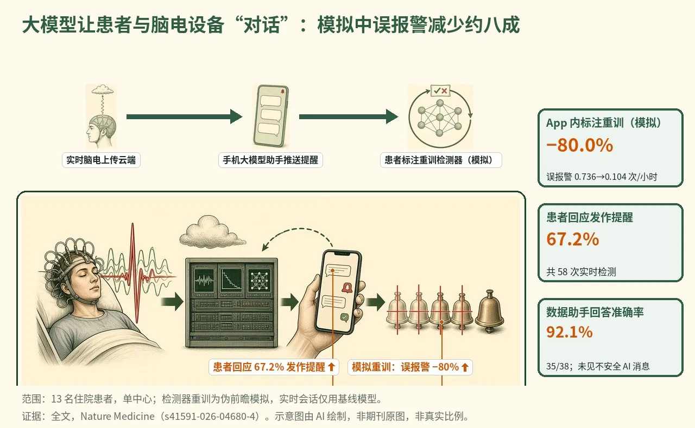

大模型让癫痫患者与脑电设备“对话”：模拟显示，患者反馈可使误报警减少约八成
宾夕法尼亚大学在 13 名癫痫监测病房住院患者中验证了一套平台：接入实时头皮或颅内脑电、符合 HIPAA 的大模型助手能回答提问、推送发作与睡眠提醒并收集患者反馈；在伪前瞻模拟中，仅凭患者反馈重训发作检测器，误报警减少 77%–81%，敏感性未下降。

- 接入实时脑电的手机智能体，在住院环境中回答患者提问并推送提醒
- 患者在 App 内回应了 67.2% 的发作提醒，为模型提供了训练标签
- 模拟显示，仅用患者标注重训，误报警减少 77%–81%，敏感性保持不变
- 在模拟中引入临床医生审核后，误报警降幅最大，为 82.6%
示意图概括了平台的闭环：实时脑电上传云端，由预训练模型检测发作、棘波与睡眠；手机大模型助手向患者推送提醒并回答提问；患者对提醒的标注在伪前瞻模拟中用于每 3 小时重训发作检测器。
研究背景与待解问题
全球约 7,000 万癫痫患者中，约三分之一的人用药后仍有发作。植入式设备是比手术创伤更小的选择，但获 FDA 批准用于癫痫的设备只有三种。在结果最好的研究中，中位发作减少幅度在 9 年后稳定在最多 75%，约 30% 的患者几乎没有改善。
这些设备本来就能"知道"不少对患者有用的信息，比如发作风险升高、漏服药物或睡眠不足，但没有一种能实时告诉患者。患者也很难给数据加标注，更无法参与算法重训。作者想验证：设备能否与患者双向对话，用通俗的方式解释传感数据、回答问题、记录症状，并用患者的回复改进自己的发作检测器。
研究设计
团队在宾夕法尼亚大学癫痫监测病房招募了 13 名成年人。他们正在接受连续视频脑电监测以明确发作特征，其中不少人是术前评估。11 人做头皮脑电，2 人做颅内脑电。研究不改变常规诊疗。
平台由三部分组成：
- 数据传输：软件从医院网络实时获取脑电数据。
- 云端分析：在符合 HIPAA 的云端运行预训练模型，包括头皮发作检测模型 SPaRCNet（基于 2,711 名患者的 6,000 余份脑电训练）、颅内发作检测模型 ONCET 与 WaveNet、棘波检测模型 SpikeNet，以及睡眠分期工具 YASA；同时计算相位同步性，作为抗癫痫药物负荷的标志物。
- 手机 App：基于 GPT-4o-mini 的大模型智能体，作者未对其做训练或微调。它有两种模式："日常对话"负责聊天和症状记录；"数据助手"生成 SQL 查询，调取患者本人的数据并以图表呈现。
患者会收到高置信度发作与棘波的推送提醒、每天早晨的睡眠报告，以及每日三次简短问卷。所有输入和输出都经过大模型审核，研究者每天复核全部对话。
为检验系统的学习能力，研究让患者把发作提醒标为"真发作""误报"或"不确定"。研究在伪前瞻模拟中每 3 小时用这些标注重训检测器，并在之后未参与训练的数据上评估。出于安全考虑，实时会话中只使用经验证的基线模型。评估分三种情形：用病房常规的患者按键报警作标签（全部 13 人）；用 App 内的患者标注（11 人可用该功能，其中 6 人提供了确认性标注）；临床医生在回路（clinician-in-the-loop，由医生审核模型挑出的片段），即模型每天挑出最不确定的十段 90 秒脑电交给专家标注。
核心结果
患者主要用来聊天，系统响应很快
1,307 条消息中，系统发起 68.9%（n = 900），患者发起 31.1%（n = 407）。患者消息中 88.5% 是日常对话，其余是询问发作（n = 24）、睡眠（n = 15）和棘波（n = 8）。日常对话的中位响应时间为 1.95 秒，数据查询为 8.69 秒。"数据助手"完成检索任务的准确率为 92.1%（35/38），消息路由的准确率为 89.7%（70/78）。发作提醒的回应最快：10 分钟内回应 44.8%，30 分钟内达 60.3%；棘波提醒 1 小时内的回应率只有 27.3%。5 名患者完成了可用性问卷，SUS 平均 83/100，属于"优秀"区间。13 名患者中有 5 人主动要求出院后继续使用。
安全审核未发现不当输出
审核拦截了 1.47% 的患者消息（6/407），AI 生成的 900 条消息无一被拦截。所有被标记的内容经复核均为良性，每日人工审查也未发现不安全或临床上不恰当的 AI 消息。
仅凭患者标注，检测器就更精确
基线检测器的中位敏感性为 0.83，误报警为每小时 0.47 次。以按键报警作标签时，微调使误报警中位减少 77.8%，F1 提高 115.4%。在模拟的整个住院期内，误报警由每小时 0.469 次降至 0.097 次，F1 由 0.063 升至 0.160，中位敏感性保持在 1.00。
App 内收集的标注效果相近。原始提醒本身不够准确（敏感性 0.136，精确率 0.138），但患者确认的事件大多正确：敏感性 1.0（5/5），精确率 0.71（5/7），阴性预测值 1.0（19/19）。由于系统发出的提醒较少，“提醒 + 患者确认”整体流程的敏感性只有 0.085（5/59）。用这些标注重训后，误报警减少 80.9%，F1 提高 158.4%。在整个住院期内，误报警由每小时 0.736 次降至 0.104 次（−80.0%），F1 由 0.021 升至 0.143。在 6 名配对患者中，App 内标注与按键标签的效果没有统计学差异，但样本太小，不能据此认为二者等效。
专家审核带来进一步提升
在模拟的临床医生在回路情形下，误报警由每小时 0.210 次降至 0.044 次（−82.6%），F1 提高 271.5%。
机制解读
论文所证实的： 在 13 名监测病房住院患者中，接入实时脑电的大模型智能体能够推送提醒、回答数据查询（准确率 92.1%）并收集患者标注，每日人工复核未发现不安全输出。离线分析中，用这些弱标签重训发作检测器使误报警减少 77%–81%，基线敏感性不变；模拟的临床医生审核（针对模型挑出的片段）使误报警减少 82.6%。
作者假设： 作者认为，患者在回路重训加上偶尔的医生审核，可让设备在门诊使用中自我调整、只需少量专家介入；同一设计还可扩展到脑深部电刺激调参、心脏器械、胰岛素泵和神经精神疾病治疗。这些都尚未经过检验。
局限与不确定
- 样本小、时间短：只有单中心 13 名患者，可能偏向愿意尝试新技术的人，中位住院不到 5 天；可用性数据仅来自 5 人。
- 监测病房环境特殊：会减药并诱发发作，结果只说明可行性，不代表居家日常决策支持的效果。
- 检测性能的提升来自伪前瞻模拟，实时会话只用了基线检测器；敏感性没有提高。
- 微调后误报警仍约为每天 2–4 次，对部分患者可能仍是负担；所用检测器是为实时部署选的轻量模型，并非最先进水平。
- App 内问卷不是经过验证的癫痫患者报告结局量表；视频和心电数据已记录但未使用。
- 患者被要求先按临床报警按钮，因此很少通过 App 报告发作。
- GPT-4o-mini 被限定于信息传递和数据检索，不做临床判断。
- 仍待回答的问题：患者是否会过度依赖系统，如何呈现不确定性，临床责任如何划分，如何持续评估快速迭代的模型，以及门诊使用能否真正减少发作和急诊就诊。
- Goldblum、Shi 和 Litt 是覆盖该系统的美国临时专利申请（审查中）的发明人。
- 其他作者声明无利益冲突。资助：美国 NIH 先锋奖（DP1-NS-122038）及其他 NIH 与基金会资助。
临床/产业意义
现有癫痫设备都无法实时与患者共享数据；此前的植入式预警系统也只能单向反馈，算法需由人工重训，间隔通常长达数月。这项研究在住院环境中给出了一个可运行的原型：设备能解释自己的数据、接收患者反馈。在伪前瞻模拟中，用不完美的患者标注每 3 小时重训发作检测器，误报警减少了约八成；实时会话中只使用了基线检测器。团队正在筹备用该平台为帕金森病患者调节脑深部电刺激的试验。论文还介绍了宾大针对云端临床 AI 的多轨治理流程，供其他机构参考；五个软件组件中有四个已开源。